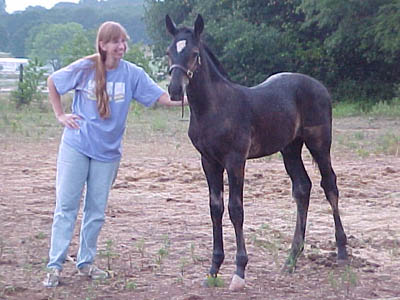
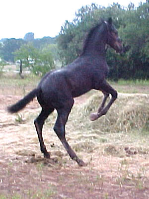
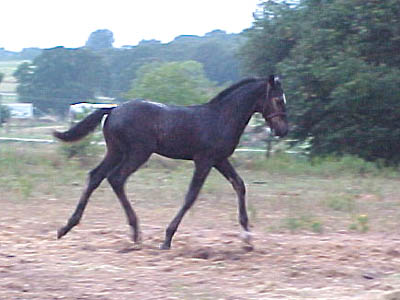
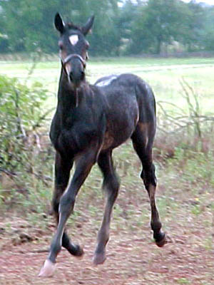
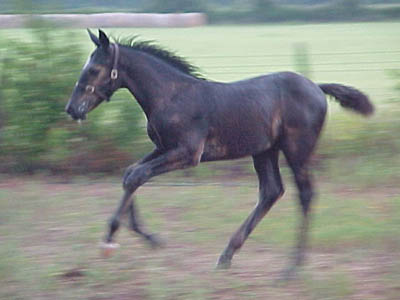
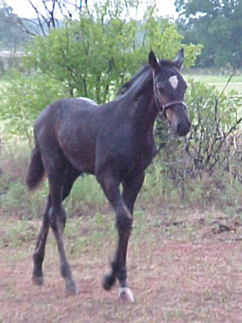
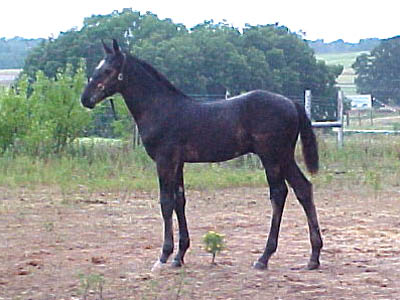

Miaren Three months old and big.
He hurt his back leg, but it doesn't seem
to be
bothering him too much.
With all his growing, I'm sure we'll wean
him earlier
than the past foals we've had.

He loves attention and being scratched.

A typical baby horse.

I like his outline right now.

Showing off.

He's shedding out very dark.

I think very much a TB baby, but with
big joints that predict some substance from his Cob father's side.

I've heard three days, three months
and three years. He's definitely showing potential at the three months
point...